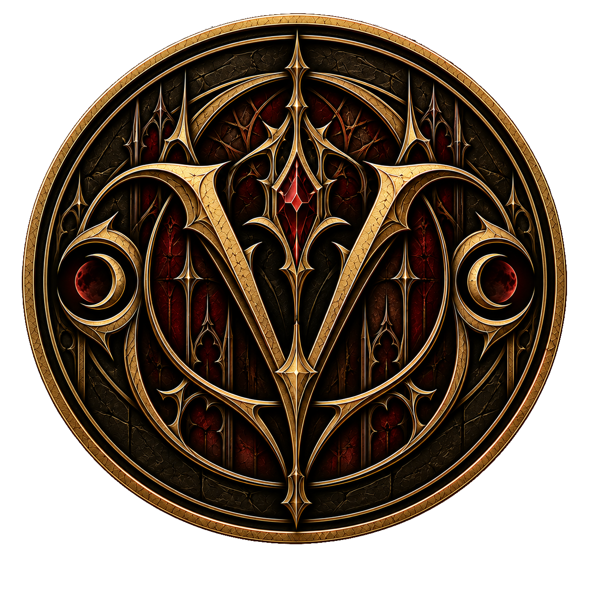

← Zum Artikel „Vampire“Weltwiki · Vampire
Der Vyrus-Clan
Der Vyrus-Clan ist einer der ältesten, größten und einflussreichsten Vampirclans. Seine Geschichte reicht bis tief ins Mittelalter zurück und seine Gesellschaft ist bis heute stark von den Traditionen dieser Zeit geprägt. Während sich andere Clans im Laufe der Jahrhunderte modernisierten oder vollständig vom Vyrus-Clan abspalteten, hält dieser konsequent an seinen alten Strukturen und Lebensweisen fest.
Unter anderen Vampiren ist der Vyrus-Clan weithin bekannt und gefürchtet. Neben seiner Größe und seinem hohen Alter tragen mehrere außergewöhnlich mächtige Blutlinien zu seiner Stellung bei. Gleichzeitig besitzt der Clan den Ruf, seine Interessen mit großer Skrupellosigkeit durchzusetzen und weder gegenüber anderen Clans noch gegenüber den eigenen Mitgliedern besondere Nachsicht zu zeigen.
Führung
An der Spitze des Vyrus-Clans steht ein Rat aus sieben Anführerfamilien, die jeweils bestimmten Blutlinien angehören. Die sieben Familien sind untereinander gleichgestellt und bilden gemeinsam die höchste Autorität des Clans.
Während die grundsätzliche Zusammensetzung des Rates bekannt ist, werden die Identitäten und Aufenthaltsorte seiner tatsächlichen Mitglieder streng geheim gehalten. Selbst Vampire, die unmittelbar im Dienst des Clans stehen, besitzen gewöhnlich keinen direkten Kontakt zur Führung. Kämpfer, Kuriere und andere Beauftragte erhalten ihre Anweisungen stattdessen über Mittelsmänner oder speziell dafür geschaffene Artefakte.
Diese Geheimhaltung geht so weit, dass gewöhnliche Clanmitglieder kaum Möglichkeiten besitzen, den aktuellen Zustand der sieben Anführerfamilien selbst zu überprüfen. Über Angelegenheiten innerhalb der Führung wird konsequent geschwiegen.
Regeln und Traditionen
Das Leben innerhalb des Vyrus-Clans unterliegt strengen Regeln. Von seinen Mitgliedern werden Loyalität, Gehorsam und die konsequente Bewahrung der traditionellen vampirischen Lebensweise erwartet.
Der private Kontakt zu Menschen soll auf ein Minimum reduziert werden. Da Mitglieder des Clans gewöhnlich mitten in der menschlichen Gesellschaft leben, Berufen nachgehen oder Unternehmen führen, lässt sich alltäglicher Kontakt nicht vollständig vermeiden. Persönliche Beziehungen zu Menschen sind dagegen grundsätzlich unerwünscht.
Eine Ausnahme besteht bei festen Partnerschaften. Soll eine dauerhafte Beziehung mit einem Menschen geführt werden, muss dieser innerhalb vergleichsweise kurzer Zeit selbst in einen Vampir verwandelt und dadurch in den Clan aufgenommen werden. Diese Regel existiert bereits seit Jahrhunderten und trug dazu bei, dass der Vyrus-Clan kontinuierlich neue Mitglieder aufnehmen und seine Blutlinien vor zu starker verwandtschaftlicher Verengung bewahren konnte.
Noch strenger wird der Kontakt zu Vampiren anderer Clans behandelt. Private Verbindungen sind grundsätzlich verboten. Ausnahmen bestehen lediglich in wenigen offiziell anerkannten Situationen, darunter rein vampirische gesellschaftliche Veranstaltungen und sportliche Wettkämpfe wie der Nachtsturm. Eine regelmäßige diplomatische Zusammenarbeit mit anderen Clans vermeidet der Vyrus-Clan weitgehend.
Technologie und Artefakte
Der Vyrus-Clan lehnt moderne Technologie nahezu vollständig ab. Lediglich wenige grundlegende technische Errungenschaften wie Automobile oder einfache Telefone werden geduldet. Computer, moderne Kommunikationstechnik und vergleichbare Entwicklungen haben im gewöhnlichen Leben seiner Mitglieder keinen Platz. Entsprechend wirken ihre Wohnungen und ihr Alltag häufig deutlich altertümlicher als die ihrer menschlichen Umgebung.
Auch Entwicklungen der modernen Vampire werden abgelehnt. Insbesondere synthetisches Blut ist verboten. Mitglieder des Vyrus-Clans konsumieren echtes Blut und müssen entsprechend lernen, ihr inneres Biest zu kontrollieren.
Anstelle moderner Technik stützt sich der Clan stark auf Artefakte. Diese übernehmen zahlreiche Aufgaben, für die andere Vampire technische Lösungen verwenden würden, bis hin zur claninternen Kommunikation. Die Vestira ist ein Beispiel dafür. Der sichere Umgang mit dem inneren Biest und dessen Kraft besitzt dadurch innerhalb des Vyrus-Clans besondere Bedeutung.
Bestrafung und Kontrolle
Die Regeln des Clans werden mit großer Härte durchgesetzt. Bei vergleichsweise einfachen Vergehen, etwa dem unerlaubten Besitz moderner Technologie oder der Missachtung von Anweisungen, droht gewöhnlich die Verbannung. Ein verbannter Vampir verliert dauerhaft seine Zugehörigkeit zum Vyrus-Clan. Auch seine Nachkommen gelten nicht mehr als Mitglieder, und eine spätere freiwillige Wiederaufnahme ist nahezu ausgeschlossen.
Schwere Verstöße können mit dem Tod bestraft werden. Besonders unerlaubte Beziehungen zu anderen Vampirclans werden als Bedrohung für die Loyalität und Abschottung des Vyrus-Clans betrachtet. In solchen Fällen kann sich die Bestrafung auch auf Partner, Kinder oder Eltern des Schuldigen sowie auf Personen erstrecken, denen Mitwissen oder Unterstützung unterstellt wird. Diese Form der Bestrafung dient insbesondere der Abschreckung.
Eine lückenlose Überwachung aller Mitglieder findet trotz dieser Härte nicht statt. Dafür ist der Clan zu groß und viele seiner Mitglieder sind für die Führung von geringer Bedeutung. Die Einhaltung der Regeln beruht daher zu erheblichen Teilen auf Angst, gegenseitiger Beobachtung, Gerüchten und Selbstkontrolle. Wird ein Verstoß jedoch bekannt, werden die Regeln konsequent durchgesetzt.
Wachstum und Assimilation
Die Größe des Vyrus-Clans ist nicht allein durch natürliche Fortpflanzung entstanden. Neben der Aufnahme menschlicher Partner wuchs der Clan im Laufe seiner langen Geschichte auch durch die Assimilation anderer Vampirclans.
Dabei unterwirft der Vyrus-Clan einen anderen Clan gewaltsam und beseitigt dessen bisherige Führung. Den verbleibenden Mitgliedern wird anschließend die Aufnahme in den Vyrus-Clan angeboten. Eine Ablehnung kann den Tod zur Folge haben.
Die ursprünglichen Blutlinien der assimilierten Vampire bleiben dabei erhalten und werden Teil des Vyrus-Clans. Auf diese Weise vereint dieser heute zahlreiche Blutlinien unterschiedlicher Herkunft unter seiner Herrschaft. Einige andere heute eigenständige Vampirclans entstanden wiederum auf dem entgegengesetzten Weg, indem sie sich im Laufe der Geschichte vom Vyrus-Clan abspalteten.
Diese lange Geschichte aus Wachstum, Abspaltungen und gewaltsamer Assimilation trägt gemeinsam mit seiner Größe, seinen mächtigen Blutlinien und seiner kompromisslosen Führung dazu bei, dass der Vyrus-Clan bis heute zu den gefürchtetsten Machtblöcken der vampirischen Gesellschaft gehört.